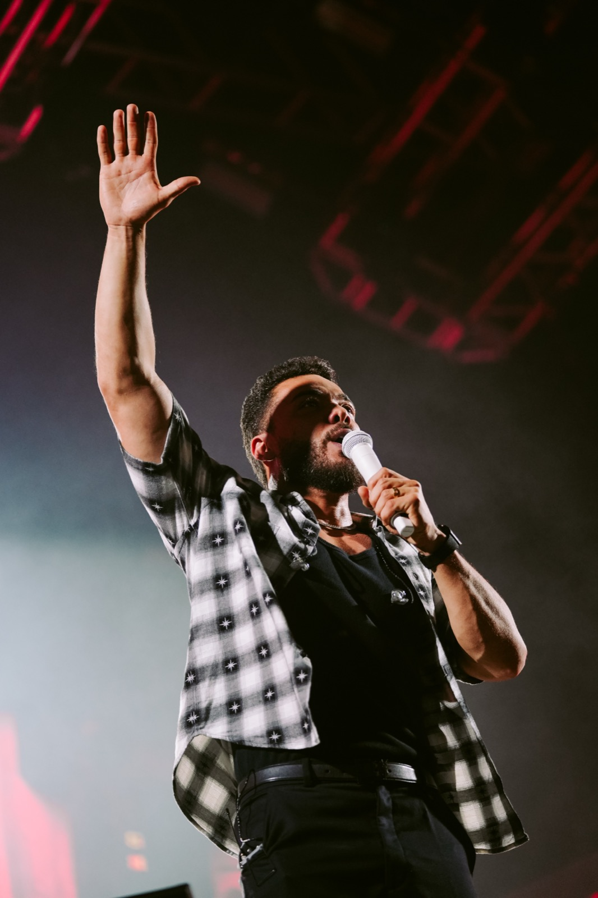
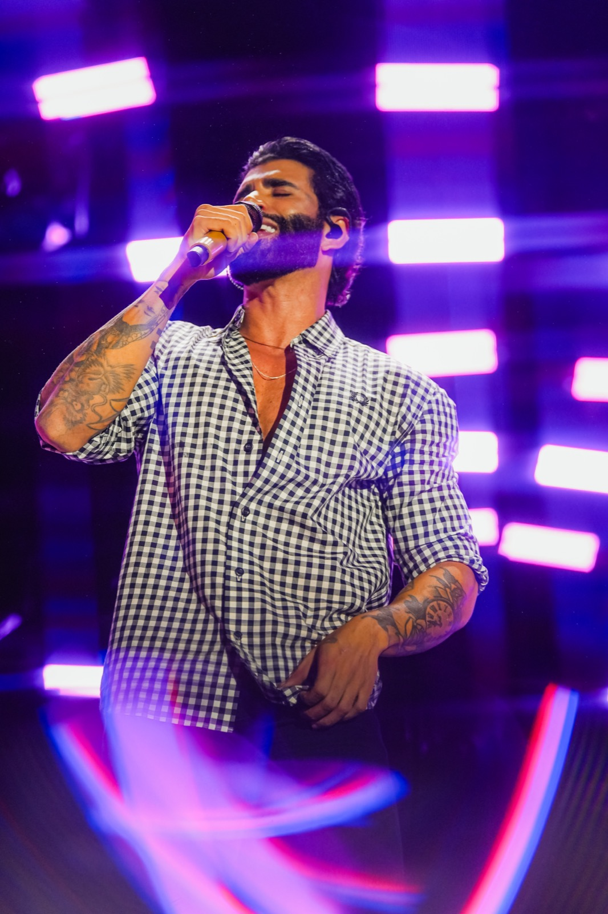
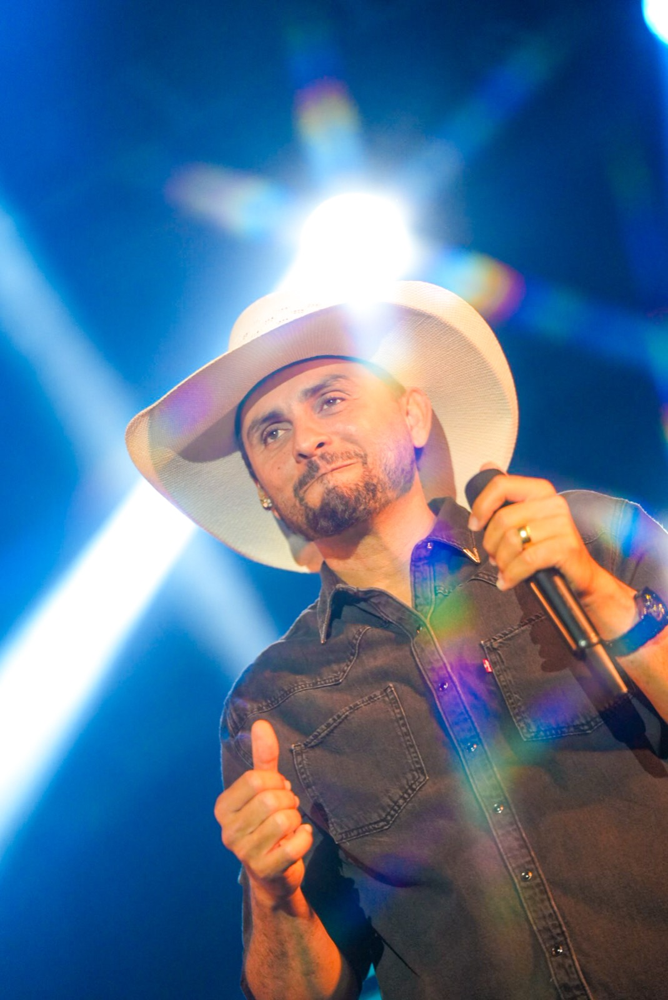
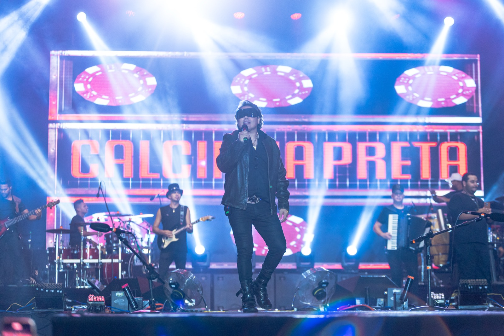

01
Shows
Palco, público e bastidores. Artistas que já fotografei:
Gusttavo LimaWesley SafadãoHenrique & JulianoMano WalterNattan
Zé VaqueiroNatanzinho LimaCalcinha PretaRodriguinhoIgor Kannário
Iguinho e LulinhaDeivinho NovaesSilvânia e BerToque DezHenry Freitas
Ver galeria →